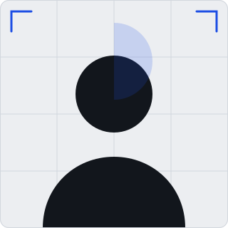

Disponible pour un stage en 2026
Bonjour
Abderrahmane
El ADNANI
Élève-ingénieur en informatique à l'EMSI de Marrakech.
Je construis des interfaces claires et rapides. J'aime transformer une idée en une page que l'on comprend du premier coup d'œil.

À propos
Je suis Abderrahmane El ADNANI, élève-ingénieur en informatique à l'EMSI de Marrakech. Je m'intéresse au développement web et au design d'interfaces : transformer une idée en une page claire et agréable à utiliser, c'est ce que j'aime le plus.
J'apprends surtout en construisant. Chaque projet m'a fait progresser en front-end et back-end ou bien apprendre une nouvelle competence. Je cherche aujourd'hui une choose de creative où mettre mes compétences au service d'une équipe et au challenge.
- Autonomie
- Rigueur
- Travail en équipe
- Curiosité
- Sens du détail
Parcours
-
2025 — aujourd'hui
3eme annee en informatique
École Marocaine des Sciences de l'Ingénieur (EMSI), Marrakech.
-
2024 — 2025
Cycle préparatoire intégré
École Marocaine des Sciences de l'Ingénieur (EMSI), Marrakech.
-
2023 — 2024
Baccalauréat sciences physiques
Lycée Riad Sallam.
-
En continu
Auto-formation au développement web
HTML, CSS, JavaScript et UI/UX design, à travers des projets personnels.
-
Raytracer 3D
2026Un moteur de rendu 3D écrit de zéro : chaque pixel est un rayon, chaque intersection est calculée à la main.
- HTML
- CSS
- JavaScript
Lancer de rayons, z-buffer, ombres portées douces, réflexion, réfraction de Snell et courbe de tonemap ACES : un moteur 3D complet écrit en JavaScript, sans WebGL ni bibliothèque. Le rendu est progressif — il s'affine échantillon par échantillon, comme une photo qui se révèle — et l'on peut exporter l'image en PNG.
-
Interpréteur de langage
2026Lexer, analyseur récursif descendant et débogueur visuel : on voit l’arbre d’évaluation s’allumer à chaque pas.
- HTML
- CSS
- JavaScript
Lexer, analyseur récursif descendant et débogueur visuel : on voit l’arbre d’évaluation s’allumer à chaque pas.
-
Blockchain from scratch
2026Proof-of-work SHA-256, arbre de Merkle, signatures ECDSA et portefeuille — une chaîne de blocs écrite à la main.
- HTML
- CSS
- JavaScript
Proof-of-work SHA-256, arbre de Merkle, signatures ECDSA et portefeuille — une chaîne de blocs écrite à la main.
-
Messagerie P2P chiffrée
2026Deux navigateurs, un canal direct, aucun serveur : clé de session dérivée par ECDH, messages en AES-GCM.
- HTML
- CSS
- JavaScript
Deux navigateurs, un canal direct, aucun serveur : clé de session dérivée par ECDH, messages en AES-GCM.
-
Tableau blanc collaboratif
2026Dessiner à plusieurs en temps réel : les opérations sont incrémentales et commutatives — la propriété d’un CRDT.
- HTML
- CSS
- JavaScript
Dessiner à plusieurs en temps réel : les opérations sont incrémentales et commutatives — la propriété d’un CRDT.
-
Réseau de neurones from scratch
2026Forward pass, rétropropagation écrite au scalpel et Adam : un réseau qui apprend, avec la courbe de perte en direct.
- HTML
- CSS
- JavaScript
Forward pass, rétropropagation écrite au scalpel et Adam : un réseau qui apprend, avec la courbe de perte en direct.
Compétences
Un pourcentage reste une affirmation. Chaque compétence renvoie donc au projet qui la démontre ; là où je n’ai encore rien à montrer, je préfère m’en tenir à ce que je peux réellement prouver.
Développement & design
-
HTML5 & CSS395%Preuve : la boutique Souk
-
Responsive Design85%Preuve : la carte, jusqu’à 360 px
-
JavaScript70%Preuve : le moteur du Mini-SGBD
-
Git & GitHub60%Preuve : mes dépôts GitHub
-
UI Design (Figma)90%
-
Node.js & Express63%Preuve : l'API Express « Contacts »
Autres outils
Projets
Dix-Dix-Dix-Vingt applications web complètes, chacune accompagnée de sa démo jouable dans le navigateur.
-
Boutique en ligne « Souk »
2026Un site marchand complet : catalogue, fiches produit, avis clients, favoris et panier.
- HTML
- CSS
- JavaScript
Catalogue de 8 articles, filtres par catégorie, panier dans un tiroir latéral et formulaire de commande validé. Chaque article a sa fiche détaillée — description, caractéristiques, disponibilité — avec les avis des clients et une note moyenne, plus une liste de favoris. Le tout en JavaScript, sans framework : les frais de livraison sont calculés et le panier, les avis et les favoris survivent à un rechargement de la page.
-
API REST « Contacts »
2026Une API « Contacts » complète : recherche, tri et pagination, avec sa console de test.
- HTML
- CSS
- JavaScript
Routes
GET,POST,PUTetDELETE, validation des données et vrais codes de statut (200, 201, 204, 400, 404). On peut rechercher un contact (sans se soucier des accents), trier par identifiant, nom ou ville, et paginer la liste ; les réponses renvoient une enveloppe avec les métadonnées (page, total, pages). L'API est simulée dans la page : elle fonctionne sans serveur et se teste depuis une console intégrée, qui affiche la réponse, le statut et la durée. -
Messagerie en temps réel
2026Des messages instantanés entre les onglets, avec réactions, réponses citées et édition.
- HTML
- CSS
- JavaScript
- BroadcastChannel
Salons, pseudonyme mémorisé et indicateur « est en train d'écrire… ». On peut réagir à un message avec un emoji, répondre en citant le message d'origine et modifier son propre message (marqué « modifié »). Chaque message est diffusé aux autres onglets via
BroadcastChannel, avec un repli sur l'événementstorage— et sans aucun serveur. -
Suivi de dépenses
2026Un carnet de dépenses avec totaux par catégorie et par mois, budgets et répartition.
- HTML
- CSS
- JavaScript
- localStorage
Ajout et suppression d'une dépense, filtres par mois et par catégorie, graphique des 6 derniers mois et export CSV. On fixe un budget mensuel par catégorie : chaque jauge signale l'approche du plafond puis son dépassement, et un graphique en anneau montre la répartition du mois. Les données restent dans le navigateur (
localStorage), sans base de données ni compte à créer. -
Carte des points d'intérêt
2026Une carte interactive pour placer, déplacer et filtrer des lieux, sans bibliothèque.
- HTML
- CSS
- JavaScript
- SVG
Un plan de Marrakech dessiné en SVG, sans bibliothèque de cartographie. Six lieux, filtres par catégorie, punaises cliquables au clavier et un mode « ajouter un lieu » : un clic sur le plan ouvre le formulaire de description. Un lieu se déplace à la souris ou aux flèches du clavier, et toute la liste s'exporte en JSON puis peut être réimportée.
-
Quiz de culture générale
2026Un quiz à choix multiples, par thème et difficulté, avec un score commenté et une révision des erreurs.
- HTML
- CSS
- JavaScript
- localStorage
12 questions tirées au hasard, correction immédiate avec explication, barre de progression et récapitulatif à la fin. On choisit un thème et une difficulté qui règle le temps par question, et un mode « Revoir mes erreurs » rejoue les questions ratées. Le meilleur score est conservé dans le navigateur (
localStorage). -
Tri-visualiseur
2026Cinq algorithmes de tri animés pas à pas, avec le compteur de comparaisons qui défile.
- HTML
- CSS
- JavaScript
- localStorage
À bulles, par insertion, par sélection, fusion et rapide, exécutés sur le même tableau. On règle la taille, la vitesse et la forme des données — aléatoire, presque trié ou inverse — et on suit les comparaisons et les écritures, en automatique ou au pas à pas. Un tableau des complexités affiche la ligne de l'algorithme courant.
-
Mini-SGBD
2026Un moteur SQL écrit à la main : analyse lexicale, arbre syntaxique, puis exécution réelle.
- HTML
- CSS
- JavaScript
- localStorage
Trois étages écrits sans librairie : découpage en jetons, analyse syntaxique descendante récursive, puis exécution contre des tables en mémoire. SELECT avec WHERE, GROUP BY, HAVING, ORDER BY, DISTINCT et LIMIT, jointures internes ou à gauche, agrégats, puis INSERT, UPDATE, DELETE et CREATE TABLE. L'erreur s'affiche à la ligne et à la colonne exactes, et la requête se déroule en trois panneaux — jetons, arbre, phases d'exécution.
-
Duel de tris
2026Deux algorithmes, un même tableau, et un bilan qui refuse d’annoncer un seul vainqueur.
- HTML
- CSS
- JavaScript
- localStorage
Le tableau est généré une seule fois puis dupliqué, pour que les deux candidats partent de strictement les mêmes valeurs. Chaque algorithme est écrit comme un générateur qui rend une opération à la fois, et le duel avance A puis B d’une opération par image. Six algorithmes au choix, quatre formes de données, et un bilan qui sépare les comparaisons des écritures plutôt que d’annoncer un vainqueur unique.
-
Tableau de bord Bootstrap
2026Composants Bootstrap 5 : grille, cartes, tableau, formulaire, alertes, modale et mode sombre.
- HTML
- CSS
- Bootstrap 5
- JavaScript
Une page d'administration construite avec Bootstrap 5 : barre de navigation, colonne latérale, cartes de statistiques, tableau des dernières commandes, formulaire validé, alertes, modale et barre de progression. Le CSS de Bootstrap est vendu localement (pas de CDN), et le JavaScript ajoute la validation du formulaire, le toast et le basculement du thème.
-
API Express « Contacts »
2026Vraie API REST en Express.js : routes CRUD, validation, pagination, tri, recherche et codes HTTP réels.
- Node.js
- Express
- JavaScript
- REST
- JSON
Une API complète de gestion de contacts, avec GET, POST, PUT et DELETE, recherche, tri, pagination, validation des entrées et codes HTTP réels (200, 201, 204, 400, 404, 500). Middleware de journalisation et gestionnaire d'erreurs global. Données en mémoire : l'API se lance avec
npm install && npm start, sans base de données. C'est la preuve réelle derrière la compétence Node.js & Express. -
Analyse CSV — Python
2026Outil en ligne de commande qui lit un CSV et produit des statistiques par colonne, avec regroupement.
- Python
- csv
- statistics
- argparse
Un script Python qui lit un fichier CSV et calcule, pour chaque colonne, min, max, moyenne, médiane et écart-type (ou le nombre de valeurs distinctes pour le texte). Regroupement par une colonne avec moyenne d'une autre. Aucune dépendance externe : uniquement la bibliothèque standard. C'est la preuve réelle derrière la mention Python.
-
Page Tailwind CSS
2026Page construite avec Tailwind CSS : approche utility-first, mise en page responsive, mode sombre.
- HTML
- Tailwind CSS
- JavaScript
Une page marketing construite avec Tailwind CSS : navigation, section hero, statistiques, cartes de fonctionnalités, formulaire et pied de page. Le CSS est généré par un build Tailwind réel (npm + tailwind.config.js), puis vendu localement. Le fichier final ne contient que les utilitaires réellement utilisés. Mode sombre via la stratégie par classe.
-
Thème WordPress « Portfolio »
2026Thème WordPress minimal mais complet : en-tête, boucle, article unique, page, archive, barre latérale, 404.
- PHP
- WordPress
- HTML
- CSS
Un thème WordPress avec la hiérarchie de templates complète : index, single, page, archive, 404. Enregistrement des menus et de la barre latérale, enqueue des styles, internationalisation, pagination. Les données viennent de WordPress : le thème est une couche de présentation, pas un site. C'est la preuve réelle derrière la mention WordPress.
Contact
Une question, un projet ou une opportunité de stage ? Écrivez-moi : je réponds vite.